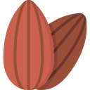
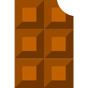
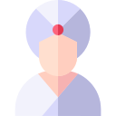

Relax
Relax
Questo massaggio ripristina benessere, armonia e pace interiore. Tra i benefici principali vi è la riduzione della pressione sanguigna, degli stati d’ansia e dei livelli di stress. Il massaggio relax stimola la produzione di endorfine, migliorando dunque l’umore di chi lo riceve. Una vera coccola per il corpo.
Durata : 55 Minuti
 Burro di mandorle
Utilizzando il burro di mandorla sul corpo, le funzioni lipidiche migliorano e
si ottiene uno dei cosmetici naturali migliori per la pelle.
Esso diventa un ottimo rimedio per la cura del corpo perché rende più bella la pelle, donandole nuova luminosità.
Durata : 40 Minuti
Luce del Marocco
Rito di bellezza, di rilassamento e abbandono, dove ascoltare il proprio corpo e lasciarsi cullare da un'atmosfera irreale in un rituale che scoglie le tensioni; comprensivo di : massaggio plantare, scrub corpo all'Argan, trattamento al corpo con sapone di Argan e acqua calda.
Durata : 45 Minuti
 Matè & Chocolat
Questo trattamento è sacro, cerimoniale per alcune culture, ed ha bisogno dei suoi tempi. Una combinazione di 5 prodotti specifici per la cura del corpo con l'obiettivo di snellire, drenare, rimodellare e idratare.
Durata : 60 Minuti
 Gran Sultano
Effettuato con oli neri essenziali alla menta ed Argan e comprensivo di: massaggio plantare con sapone nero, olio essenziale alla menta e olio di Argan, trattamento al corpo con sapone di Argan e acqua calda.
Durata : 60 Minuti